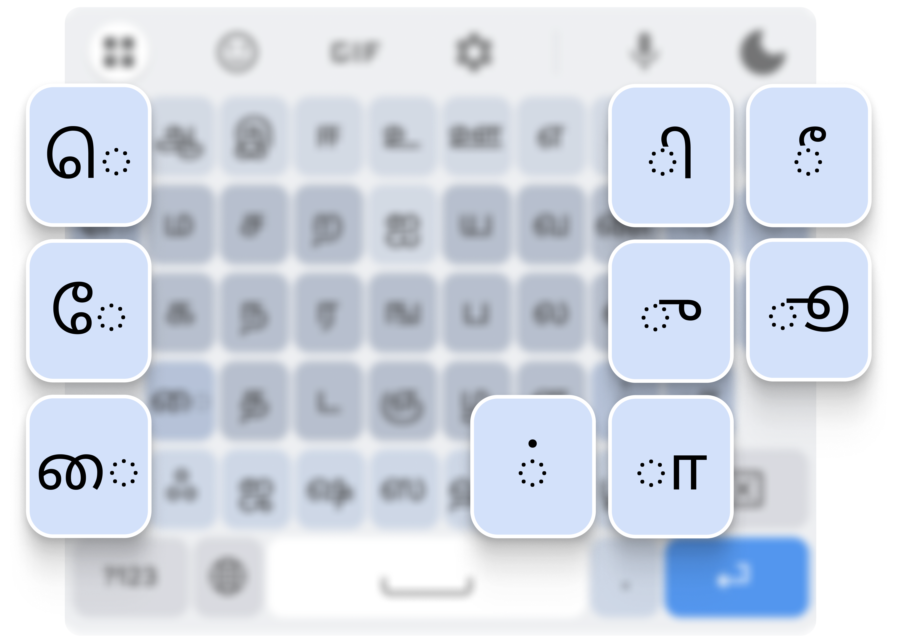
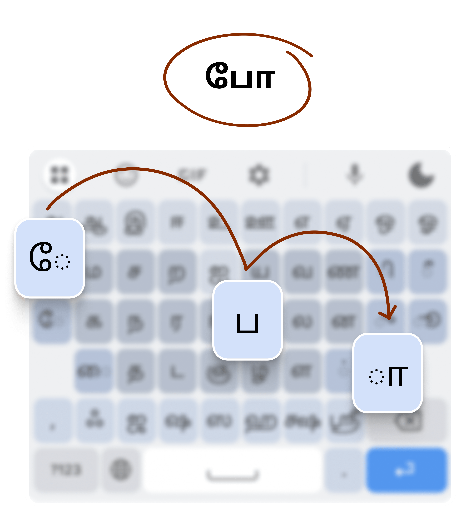
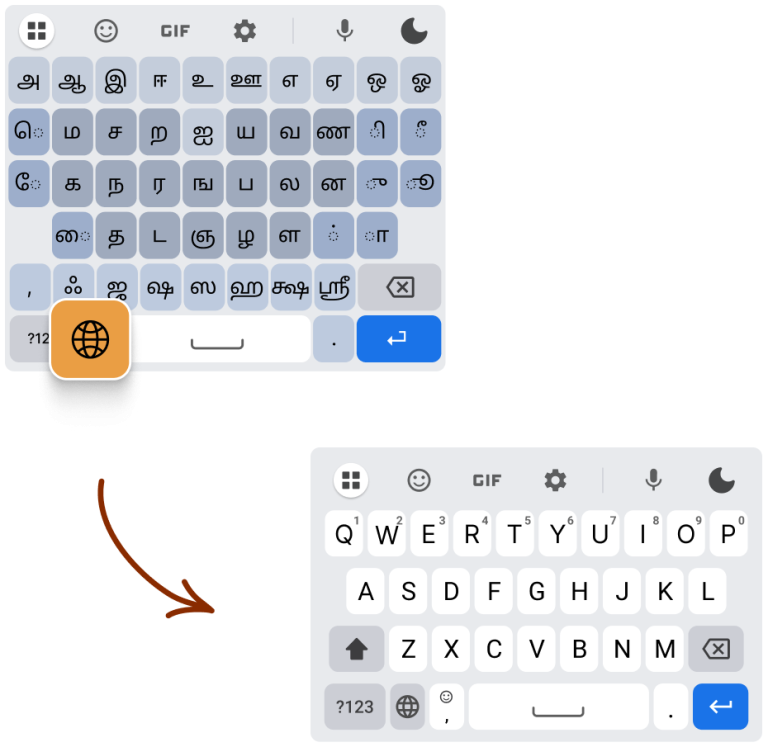
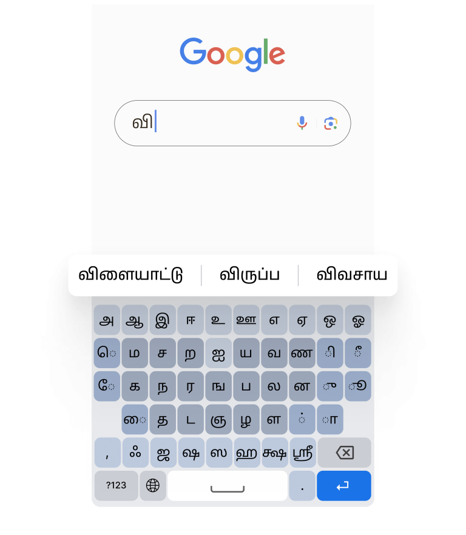
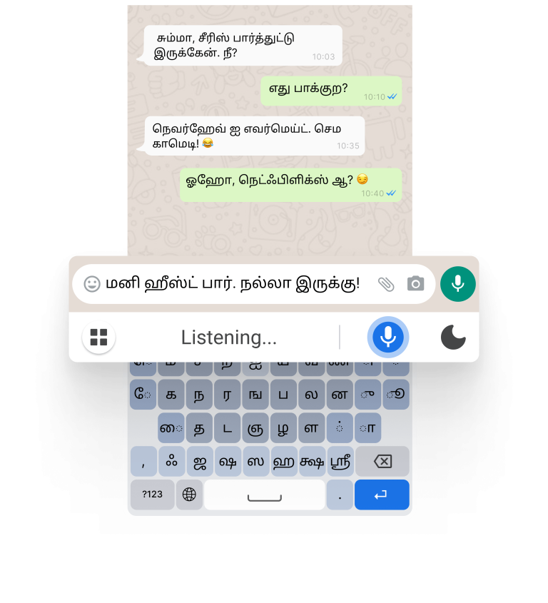
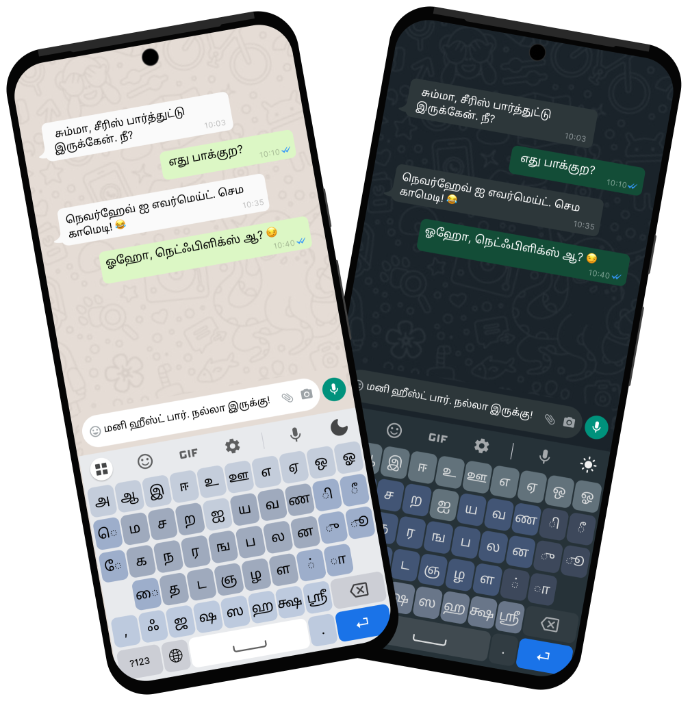
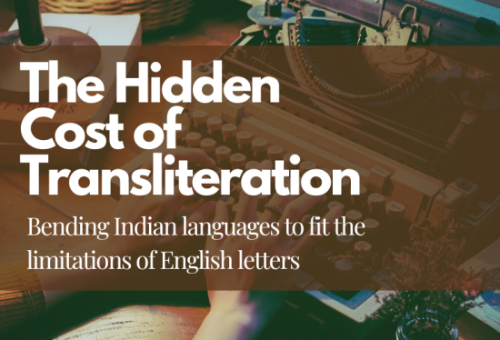
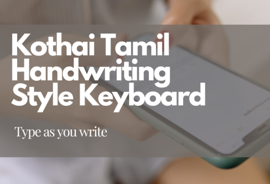

Download your keyboard today









ஏன்?
இந்த டிஜிட்டல் உலகில், நாம் ஆங்கில மொழியை அதிகம் பயன்படுத்தி வருவதால், தமிழ்மொழியில் பேசினாலும் தகவல்களைப் பகிர்ந்தாலும், ஆங்கிலப் பாணியிலேயே அமைகிறது. அதுவும் நாம் தமிழ் மொழியை உபயோகிப்பதைக் குறைத்துவிட்டு, ஆங்கில எழுத்தை உபயோகித்தே தமிழ் வார்த்தைகளைப் எழுதி வருகிறோம்.
எப்படி?
"கோதை" விசைப்பலகை அமைப்பில் (Layout), தமிழை நாம் எழுதும் விதத்திலேயே தட்டச்சு (Typing) செய்யலாம். இதன்வழி தமிழைத் தாளில் எழுதுவதுபோல் தமிழ் எழுத்துக்களைச் சுலபமாக கைபேசிகளில் பயன் படுத்திக்கொள்ளலாம்.
சிக்கல்கள் / சவால்கள்:
- அநேக மக்கள், தமிழ் ஒலியைத் தரும் ஆங்கில எழுத்துகளைக் கொண்டே எழுதுகிறார்கள். (“என்ன” என்பது “enna” என்று எழுதப்படுகிறது)
- இப்பொழுது உள்ள விசைப்பலகையில் (Google/Samsung/மற்றும் பல…), தமிழை நாம் எப்போதும் எழுதும் முறைப்படி இல்லாமல், ஒரு எழுத்தைத் தேர்வு செய்து, பின் அதன் ஒலியைத் தேர்ந்தெடுக்கச் செய்கிறது. ("கௌ" என்ற எழுத்துக்கு முதலில் "க"-வை தட்டச்சு செய்து, பின்னர் "கௌ" என்பதைத் தேர்வு செய்ய வேண்டியுள்ளது)
- அஞ்சல் பாங்கு, தமிழ் 99, New Typewriter, மற்றும் பாமினி போன்ற பல வகை தமிழ் விசைப்பலகை(Keyboard) அமைப்புகள் உள்ளன. கணினி பயன்பாட்டாளர்கள் இதை பயன்படுத்தினாலும் கைபேசி செயலிகளில் இதை பயன்படுத்துவோர் குறைவு
- ஆங்கிலத்தின் QWERTY விசைப்பலகை அமைப்பைப் போல, தமிழுக்கென்று நிரந்தர விசைப்பலகை அமைப்பு கிடையாது. தமிழ்99 என்னும் ஒலி-அடிப்படையிலான எழுத்து அமைப்பே பெரிதும் பயன்படுத்தப்பட்டு வருகிறது ("க" உடன் "இ" சேர்த்து "கி" என்னும் எழுத்து கிடைக்கிறது)
கோதை விசை அமைப்பு
- இந்த செயலியின் நோக்கமானது தமிழ் வார்த்தைகளை, நாம் தாளில் எழுதும் முறைப்படியே பயன்படுத்தி தமிழ் எழுத்துக்களையும் குறியீடுகளையும் நினைவில் வைத்துக்கொள்ளச் செய்கிறது.
- நம் கோதை விசைப்பலகையில் நாம் எழுதும் முறையிலே, விசைகளைத் தட்டி, தேவையான வார்த்தையை உருவாக்கிக் கொள்ளலாம். உதாரணமாக, "கோ" என்ற எழுத்துக்கு, "ே" அழுத்தி, "க" அழுத்தி பின்னர் "ா" என்று வரிசையாகவே எழுதிக் கொள்ளலாம். இதில் ஒற்றைக்கொம்பு (ெ), இரட்டைக்கொம்பு (ே), இணைக்கொம்பு (ை), கொம்புக்கால் இணை எழுத்துக்கள் (ௌ) என தமிழில் உள்ள அனைத்து எழுத்துக்களையும் எழுதிக்கொள்ளலாம்.
- நம் விசைப்பலகையில், 313 எழுத்துக்களை (12 உயிர் எழுத்துக்கள், 18 மெய் எழுத்துக்கள், 216 உயிர்மெய் எழுத்துக்கள், 2 சிறப்பு எழுத்துக்கள் (ஃ & ஶ்ரீ), 5 வடமொழி எழுத்துக்கள், 60 வடமொழி சேர்க்கை எழுத்துக்கள்) 45 விசைகளுக்குள் கொண்டு வந்துள்ளோம். இந்த விசைகளை பயன்படுத்தி நாம் தமிழில் உள்ள அனைத்து எழுத்துக்களையும் எழுதிக்கொள்ளலாம்.
- மற்ற விசைப்பலகைகளைப் போல் விசையின் வரிசையோ அமைப்போ மாறாமல், நிலையான வரிசையைக் கொண்டுள்ளதால், எளிதாக எழுத்துக்களைத் அறிந்து, விரைவாக ஒரு வாக்கியத்தைத் தட்டச்சு செய்ய முடிகிறது.
- எழுதுவதைப் போலவே தட்டச்சு செய்வதனால், சிறிது பயன்பாட்டிற்குப் பின், நல்ல வேகத்துடன் தட்டச்சு செய்ய முடியும்.

மேம்படுத்தப்பட்டுள்ளவை
- பயனர்களின் புரிதலுக்காக - உயிர்மெய், உயிர் மற்றும் கிராந்த எழுத்துக்கள் வேறுபடுத்திக் காட்டப்பட்டுள்ளது
- தமிழ் எழுத்துக்களில் பயன்படுத்தும் முன் குறியீடுகள் (ஒற்றைக்கொம்பு, இரட்டைக்கொம்பு, இணைக்கொம்பு) இடது பக்கமும், பின் குறியீடுகள் (குறில் மற்றும் நெடில் குறியீடுகள்) வலது புறமும், கட்டை விரலின் மூலம் தட்டச்சு செய்வதற்கு வசதியான முறையில் அமைக்கப்பட்டுள்ளது. அதிகம் பயன்படுத்தும் உயிர்மெய்யெழுத்துக்கள், இடது மற்றும் வலது பக்கங்களில் பயன்பாட்டிற்கேற்ப பொருத்தப்பட்டுள்ளது
- அதிகம் பயன்படுத்தப்படாத எழுத்துக்கள், குறைவான தேவையுள்ள எழுத்துக்கள், நடுப்பகுதியில் அமைக்கப்பட்டுள்ளது
- இவ்வகையான விசைப்பலகை அமைப்பு, கட்டை விரலைக் கொண்டு மிக வேகமாகத் தட்டச்சு செய்ய உதவுகிறது
- அடிக்கடி பயன்படுத்தப்படும் எழுத்துக்கள் மற்றும் சேர்க்கைகளுக்கு விரைவான அணுகலுக்காக முன்னுரிமை அளிக்கப்பட்டுள்ளது. அடிக்கடி வரும் உயிரெழுத்துக்கள்: அ, ஆ, இ, போன்றவை. அடிக்கடி வரும் மெய்யெழுத்துக்கள்: க, த, ம, ப போன்றவை
வலைப்பதிவு

The Hidden Cost of Transliteration
Language input plays a crucial role in communication. In today’s digital world...
Read More
Kothai Tamil Handwriting Style Keyboard
In a world increasingly dominated by digital communication...
Read Moreஆய்வுக்கோப்புகள்:
- தற்போது இருக்கும் விசைப்பலகைகளின் குறைபாடுகள்:Input Method – Redesigning
- டிஜிட்டல் விசைப்பலகைக்கு முன், தமிழ் தட்டச்சின் பயன்பாடு:Tamil Typewriter Method
- தமிழ் NLP மூலம் கண்டறியப்பட்ட எழுத்துக்களின் அதிர்வெண்ணைக் கொண்டு தட்டச்சை எளிதாக்க, புதிய விசைப்பலகை வடிவமைப்பு: Letter Frequency Data Collection
- யூனிகோட் ஆய்வு மற்றும் எழுத்துக் குறியீட்டு வரைவு: U0B80.pdf